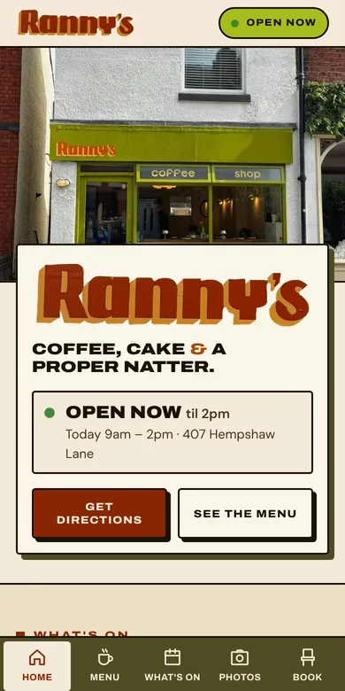

← All work
Ranny's
Coffee, cake & a proper natter.
rannys.co.uk
Code

Colours lifted off the shop sign
Knows when the shop is open
The owners edit the menu
What
Website · coffee shop
My part
Design & build
Built with
Astro
Plain-text content
Owner editor
Next
hospital
radio.